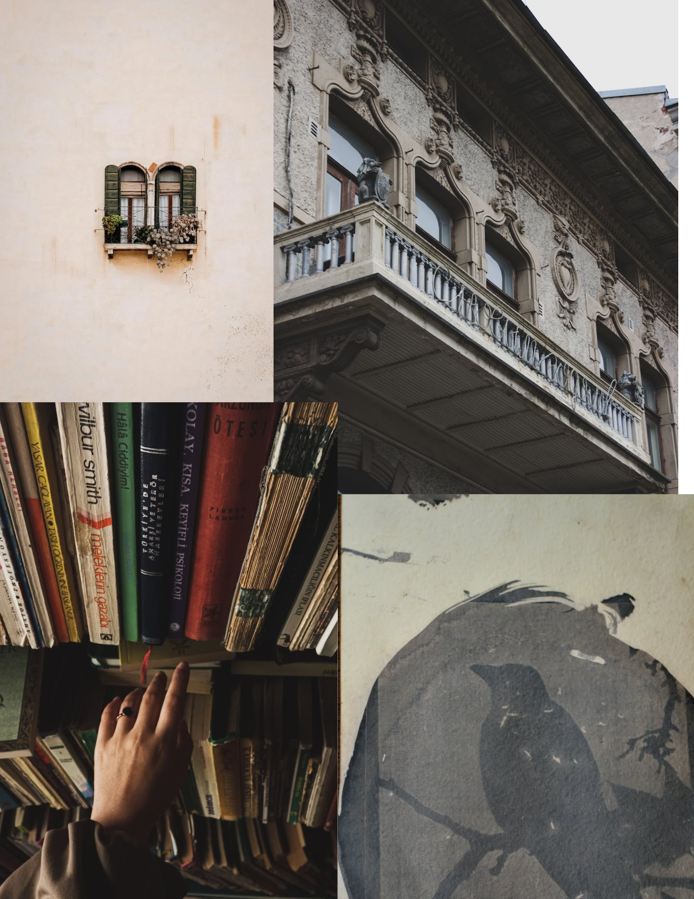

Filtered Photo Kaleidoscope

I first got a random image and inserted it into photoshop. I then altered the way it looked like the filter and started duplicating it. I started changing the direction some go and it looked like a new image. I managed to make it blend into each other to turn into a kaleidoscope.
Pixel Character

This was just what I thought would be in an old retro game in the background. I also just wanted to make it have a creepy moon like a horror level. It would just follow the player around and move with the surroundings. It was a basic design but I feel like I could improve on it in the future.
Asthetic

I used the program to just make a random collage of photos. I wanted something that would represent me in a couple of different pictures like for example the one with books saying how I like to read. I used pictures that were old and from architecture so I could describe what I want to do. Canva allowed me to put pictures over each other without them overlapping and not making it a mess. I think the pictures I took matched my aesthetic because it shows what I like and do without words..png)